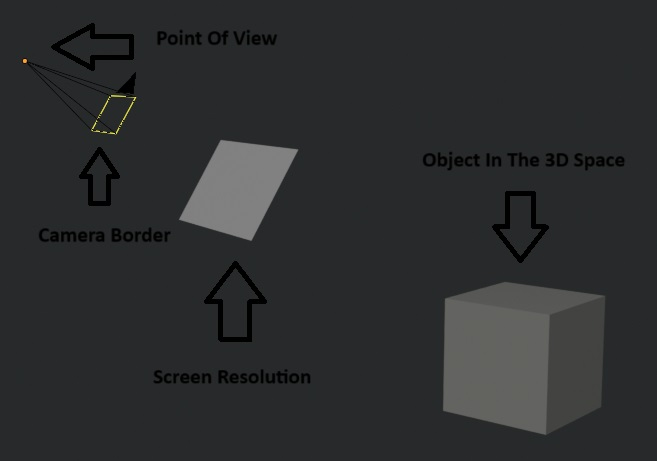
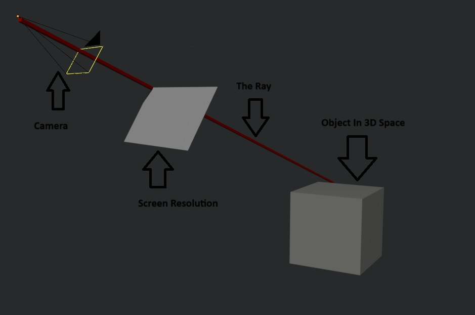

Raymarching Loop :
What is a Raymarching Loop ?
The Raymarching Loop is used as a shader to display 3D.
But How ?
In a way if we break down the word “Raymarching Loop”, “Ray” means Ray You will see later why.
“Marching” in this case means moving forward, drawing a straight line.
And finally “Loop” as translated means a loop which restarts a calculation defined in our case.
But what about this famous calculation ?
So we must first visualize the Camera, the resolution frame of our screen and the surrounding 3d space:
Here is a schematic of this calculation:

And so we actually only see the 3D space but in fact a camera looks at the resolution and then only the 3D view.
So this is a basic 3D view and the Raymarching loop is the fact that we trace a line from the camera. Then in the first pixel of the screen (top left) to finally travel through 3D space, and if this famous path meets an object previously placed in 3D space. So we can decide to change the color of this object. And to add realism we will add calculations which will add changes in brightness to the object depending on its positioning towards the camera.
And to prevent the ray from going too far we define a limit that we will call (“far” in our example) which automatically causes it to resume at the next pixel.
Here is an example:
